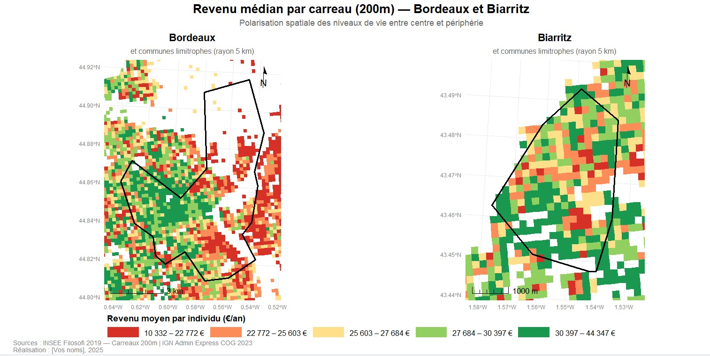
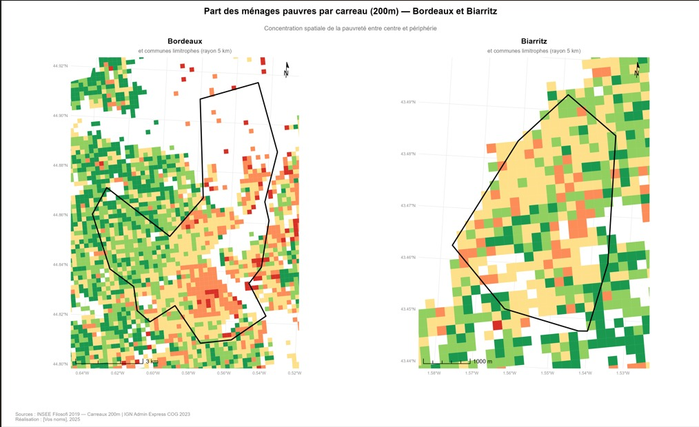

Géotraitements Vecteur
Introduction
Cette page présente les géotraitements de type vecteur réalisés dans le cadre de ce projet. Ces traitements s’appliquent à des entités géographiques discrètes — ici des polygones représentant les carreaux INSEE et les contours de communes — et permettent de structurer l’espace d’étude, de calculer des indicateurs socio-économiques et de produire des cartes thématiques comparatives entre Bordeaux et Biarritz.
Schéma de géotraitement
Le schéma ci-dessous présente l’enchaînement complet des opérations vectorielles réalisées, depuis les données sources jusqu’aux cartes finales.

Figure 1 — Schéma de géotraitement vecteur : des données sources aux cartes produites.
Détail des étapes
Étape 1 — Reprojection
Les carreaux Filosofi sont fournis en Lambert-93 (EPSG:2154), projection officielle française adaptée au calcul de distances et de surfaces. Une reprojection est appliquée en début de traitement pour garantir la cohérence spatiale entre toutes les couches.
carreaux <- st_transform(carreaux, crs = 2154)
communes <- st_transform(communes, crs = 2154)Étape 2 — Sélection attributaire
Les communes de Bordeaux (code INSEE
33063) et Biarritz (code INSEE
64122) sont extraites du fichier IGN COGiter par filtrage
attributaire sur le code commune.
bordeaux <- communes %>% filter(DEPCOM == "33063")
biarritz <- communes %>% filter(DEPCOM == "64122")Étape 3 — Zone tampon (buffer 5 km)
Une zone tampon de 5 km est créée autour de chaque commune afin d’intégrer les communes limitrophes dans l’analyse. Cela permet d’étudier les dynamiques centre/périphérie au-delà des seules limites administratives.
buffer_bdx <- st_buffer(bordeaux, dist = 5000)
buffer_btz <- st_buffer(biarritz, dist = 5000)Étape 4 — Intersection spatiale
L’intersection spatiale permet de sélectionner uniquement les carreaux situés dans la zone tampon de chaque ville, en découpant les carreaux qui chevauchent la frontière du buffer.
carreaux_bdx <- st_intersection(carreaux, buffer_bdx)
carreaux_btz <- st_intersection(carreaux, buffer_btz)Étape 5 — Calcul attributaire
Trois indicateurs sont calculés à partir des variables brutes Filosofi :
carreaux_bdx <- carreaux_bdx %>%
mutate(
revenu_moyen = ind_snv / ind, # Revenu moyen par individu (€/an)
taux_pauvrete = men_pauv / men * 100, # Part des ménages pauvres (%)
densite = ind / 4 # Densité (individus/ha)
)| Indicateur | Formule | Unité |
|---|---|---|
| Revenu moyen par individu | ind_snv / ind |
€/an |
| Part des ménages pauvres | men_pauv / men × 100 |
% |
| Densité de population | ind / 4 |
individus/ha |
Étape 6 — Discrétisation
Les valeurs continues sont découpées en classes communes aux
deux villes grâce à la fonction cut().
L’utilisation de breaks identiques pour Bordeaux et Biarritz est
essentielle pour garantir la comparabilité des
cartes.
breaks_revenu <- c(10332, 22772, 25603, 27684, 30397, 44347)
labels_revenu <- c("10 332 – 22 772 €", "22 772 – 25 603 €",
"25 603 – 27 684 €", "27 684 – 30 397 €",
"30 397 – 44 347 €")
carreaux_bdx <- carreaux_bdx %>%
mutate(classe_revenu = cut(revenu_moyen, breaks = breaks_revenu,
labels = labels_revenu, include.lowest = TRUE))Cartes produites
Carte 3 — Revenu médian par carreau (200m)

Figure 2 — Revenu médian par individu (€/an) à Bordeaux et Biarritz, carreaux INSEE 200m. Sources : INSEE Filosofi 2019 — IGN COGiter 2023.
Lecture de la carte : La carte met en évidence une polarisation spatiale nette à Bordeaux, avec des revenus élevés concentrés dans l’hypercentre et les quartiers ouest, contrastant avec des revenus plus faibles en périphérie nord et sud-est. À Biarritz, la distribution est plus fragmentée, avec une alternance de carreaux aisés et défavorisés liée à la structure touristique et résidentielle du territoire.
Carte 4 — Part des ménages pauvres par carreau (200m)

Figure 3 — Part des ménages sous le seuil de pauvreté (%) à Bordeaux et Biarritz, carreaux INSEE 200m. Sources : INSEE Filosofi 2019 — IGN COGiter 2023.
Lecture de la carte : La concentration de la pauvreté suit une logique spatiale distincte dans les deux villes. À Bordeaux, les taux les plus élevés se localisent dans des secteurs périphériques bien identifiés, traduisant une ségrégation socio-spatiale marquée. À Biarritz, les niveaux de pauvreté sont globalement plus faibles mais spatialement dispersés, ce qui reflète une structure urbaine moins polarisée.
⚠️ Les cases blanches sur les cartes correspondent aux carreaux masqués par l’INSEE pour secret statistique (moins de 11 ménages).
Analyse comparative
La comparaison des deux cartes révèle des logiques spatiales contrastées :
| Critère | Bordeaux | Biarritz |
|---|---|---|
| Structure des inégalités | Polarisation centre/périphérie marquée | Distribution fragmentée, moins hiérarchisée |
| Revenus élevés | Concentrés dans l’hypercentre et l’ouest | Dispersés, liés à l’attractivité résidentielle |
| Pauvreté | Localisée en périphérie nord et sud-est | Faible et spatialement diffuse |
| Densité de carreaux renseignés | Forte (tissu urbain dense) | Plus faible (espaces moins peuplés) |
Ces résultats confirment l’hypothèse d’une différenciation des dynamiques centre/périphérie selon la nature et la taille de la ville : la polarisation classique observée à Bordeaux ne se retrouve pas sous la même forme à Biarritz, où les logiques touristiques et foncières produisent une géographie des inégalités plus complexe.
Conclusion
Les géotraitements vecteur ont permis de structurer l’espace d’étude et de produire deux cartes thématiques comparatives à haute résolution spatiale. La chaîne de traitements — reprojection, sélection, buffer, intersection, calcul attributaire et discrétisation — constitue le socle méthodologique du projet et garantit la cohérence et la comparabilité des analyses entre Bordeaux et Biarritz.